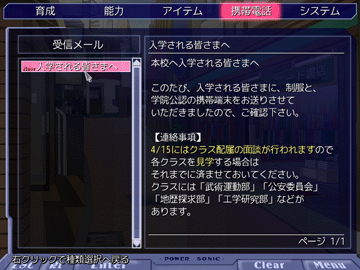

シルバーセカンド開発日誌
2009年03月
■
2009-03-27 (金) シル学 NPC成長&携帯画面▼今日はダブル更新です、ウディタに興味ある方は一つ下の記事もどうぞ。
今までシルフェイド学院物語は、パーツ別に開発を進めていたので、
イマイチ進んでいる実感がなかったのですが、
いざ色々そろって、オープニングから始まってセーブロードも可能になって
ゲームのシナリオが進行するところまで行くと、ウキウキしてきました！！
インターフェースは久々に満足するまで作りこんだので
ちょっと自慢したいデキ。やっぱりマウス操作は手がラクです。
開発するのがちょっと大変なのが難点ですけれどね。
とりあえず、前回に引き続き、ここ最近の進行状況をば。
これを書くことを目標に日々頑張れば、それなりの成果が
出せそうだと思ったので、これから
ちょくちょく書いていきたいと思います。
3/21 これまでに出ている小さなバグを修正
3/22 NPCの自動成長処理やデータフォーマットについて検討
3/23 NPCの情報を、テキストファイルで設定できる処理を実装
3/24 NPCの自動成長機能を実装 1ヶ月に1回判定が行われ、
自動でパラメータが伸びたり、新しいスキルを覚えます。
3/25 ちょっと寄り道、ウディタのバグ修正。
3/26 ウディタのバグ修正・ウディタ高速化処理をちょい追加
今週は、シル学開発と並行してウディタの高速化も行っています。
カテゴリが違うので、詳しいことは一個下の記事で。
【NPCの自動成長機能】
今回は主に、NPC（ノンプレイヤーキャラ、要は主人公以外）の
自動成長システム作成に取り組んでいました。
シルフェイド学院物語では、主人公以外のキャラも
毎月成長したり、新しいスキルを覚えたりします。成長速度をいじれば、
「主人公はトーテム持ちなのに、
周りの一般人が全員自分より強いんですけど！？」
ということだって実現可能！！って実現してどうする。
そういうのはマゾな人用に高難易度モードとして
用意しておこうと思います。
【携帯電話コマンド】
で、今回はもう一つ、「携帯電話」コマンドを紹介！

もうそのままズバリ携帯電話、というかむしろEeePCっぽいです。
受信メールだけでなく、捜査情報なども全部ここに表示されます。
たまにメールなどの「情報」そのものに
「イベント」が付与されているものがあったりして、
イベント起動させればそこから通販したり、メールについて
トーテムと相談したりするといったことが可能です。
とそれだけ言ってもたぶんよく分からないので、
紹介動画撮る頃にでもまた紹介したいと思います。
内容表示欄（右部分）には、最大で横350X縦300サイズまでの
画像を表示することが可能です。
「添付画像」とか言って画像を貼り付けてみたり、
「ピンナップ屋さんで買ったものがいつでも見られるようになる」とか
そういったことにも応用可能！夢ばっかり広がりますが
私自身はそんな画像作るヒマがたぶんないという本末転倒っぷり！！
まあ、オマケ作るのは最後でいいんですよ、最後で、うん。
私は顔グラフィックだけでたぶん死んじゃいます。
以下は気になったコメント。
＞ウディタはヴァージョンいくつくらいまで出来そうですか？将来的には
あと4年分くらい更新のネタがありそうなので
毎年10回、一回に0.01ずつバージョン上げたとしても
「1.60」くらいまでは増やせそうな予感がしています。
＞顔グラフィック７種類とはスゴイですね！
＞具体的にどういった表情があるのですか……！？
基本で、「普通・笑顔・困る・ガーン・怒り・照れ・驚く」（仮）です。
あと3つ分、自由な枠があります。
＞そろそろ「出演確定キャラ」を
＞M-Diaryで報告していただけるとうれしいです。
＞【完成までいつでも募集中！】と言っていたので、出演希望のコメントが
＞多数来て「またこのコメントか…。いちいち（略）」ってことになると、
＞ウルフ先生の負担が重くなりかねないと思います。
顔グラフィックが完成している分で言うと、アルバート・イシュテナ
エージス・シン・シズナ・セタパパ・セタ・メアリー・ナダです。
他は新キャラ。
＞早送り機能が無いと本当に投げ出したくなります。
＞現にフリゲで投げる大半の原因です
分かります！ 快適システムは幻想譚あたりから頑張ったつもりですが、
若い頃に作ったシル見はイマイチ遅いので、
アレ何とかしたいなあと思っています。
＞けっしてせかしている訳ではありませんが見聞録のほうは
＞更新しないのでしょうか小４のころからずっと待っているのですが・・・
作りたいものから作る派なので、なかなかシル見に戻れません、
期待してくださっている皆さまには本当に申し訳ございません。
＞学院物語はユーザがイベントを追加できるようですが、
＞追加したイベントを削除する機能も実装されるのでしょうか？
1イベントで1テキストファイルになっているので、
増やした分を消せば削除することができます。
イベント用テキストファイルの見本はこんなの(インターネットアーカイブより)です。 ■
2009-03-26 (木) ウディタ高速化進行中▼
ホントはもっとヒマになったらやろうと思っていたのですが、
なぜ今かというと、
発端は第二回ウディコンで、
面白そうなのにやたら重いゲームがあったので
それをもう少し快適に遊びたい（し、みんなにも遊んでもらいたい）
という欲求からでした。
実はすでに、「ラベル処理」やごく一部の「変数操作」だけを高速化した
プロトタイプバージョンを、処理が重いゲームを公開している方に
テストしてもらっています。
たとえば高速化したい主な対象だった
「夢柱」という弾幕シューティングゲームで
すでに一般公開テストを行っていただいているのですが、
この段階ですでに2倍以上の速度が確保できているようなので
（もと17～25msくらいだったイベント処理時間が、7～10msくらいに！）
ちょっと期待してもいいですよ！
といっても、夢柱は「ラベル処理」がボトルネックだったので、
これを高速化したのが一番大きかったんですけれどね。
この「ラベル処理」は従来版だと、ツクールと同じく、
「イベント内を上から一行ずつ探索して、
どこにジャンプ先があるかを調べて、
見つかったらそこへジャンプする」
というアルゴリズムで動いていたのですが、
これだとイベントコマンドの量が多い場合、
探索の負荷がバカにならないという問題がありました。
新版はそんなことせず、一瞬で目標地点に
ジャンプできるようになってあるので負荷はほぼゼロになったのです！
（ただし「\cself[3]」などの特殊文字がないことが前提）
といった感じの改善を行っていました。
高速化するにも、参考となるゲームがないと
「何が重いのか」「どこがボトルネックか」
という観点での高速化のメドが立たないので、メッチャ複雑な処理を
頑張って組んでくださっている作品は
参考にさせていただきたいと思っています。
このウディタの高速化、
正式版では「変数操作」と「DB操作」の2つに関して、
約3倍速くすることを目標にしています。
約一ヶ月前までは、高速化に対してうんうん唸っていました。
高速化は、プログラム的な意味での堅牢性を考えると色々問題があって、
これまでの処理が「命綱を付けた上で石橋を渡る」くらいの安全度なら、
新しい高速処理は「崖上のロープ一本の上を何も付けずにダッシュする」
くらい危険なことです。たとえば、変数の指定が間違ってたら、
エラーも何も出ずにゲームが強制終了！という事態が起きかねないのです。
しかも「エラーを判定する処理そのもの」が結構大きい負荷になるので、
高速化を考えた場合、どうしてもエラーチェックを
省かざるを得ないんですよ。
それでも、コマンドの指定が間違っている時はエラーを出したいし、
合っているときはエラーチェックせずに処理させたい！
あ、ここでの「エラーチェック」ってのは、
例えば変数の指定が間違ってたら
「指定が間違ってるよ！」ってエラーが出るじゃないですか、
ああいうのですね。
それをなくしてしまうと、
エラーが起きたとき意味不明でデバッグが大変すぎます。
でも速くしたい。この辺りの兼ね合いがあって
高速化に踏み切れませんでした。
デバッグ用EXEと高速版EXEファイルを
両方用意するという手もありましたが、
それやると、片方でエラーが起きて片方で起きないという意味不明な状況が
起こりかねないので、なるべくそれも避けたいと思っていました。
おそらく両者の処理が全然違うものになるので、デバッグ文が入ってるか
入っていないの単純な差だけじゃ済まないからです。
単純に以後の開発にかかる時間が2倍になるので、それはよろしくない。
「処理の安全性を維持したまま高速化する」にはどうすればいいか？
ある日簡単な方法を思いつきました。その方法とは、
「処理が安全であるかどうかをゲーム開始時に全部チェックして、
安全であることが確定したら高速なイベントコマンド処理に変換する。
エラーの危険性がある処理は、これまで通り普通に処理する」
です。あまりに単純な発想ですが、オプション機能がゴテゴテ付きまくりな
ウディタにおいては、これが異様に効果的でした。
ただ新たな問題は、その「安全かどうかのチェック」が間違ってると、
これまたエラいことになってしまうということです。
これはウディタユーザの皆さまにもデバッグを
手伝っていただくことになるかもしれません。
というかこれまでの経験的に言って、
何も起きずに終わることは有り得ません。
そんなわけで、より高速になった次回バージョンをお楽しみに！
これでシルフェイド学院物語も低スペックで
快適に遊べるといいなあと思います。開発に必死で日誌書くの忘れてたウルフです。

イシュテナ先生は保険医……じゃなくて主人公のホームルームの担任です。
【シルフェイド学院物語 開発近況】
3/12～13 システム進行 セーブロードを実装
3/14 S.EXPと所持金欄を忘れていたので今さら追加、
それらの増減処理も追加
イベントスクリプト用のコマンドに「パラメータ変更」処理を追加
3/15 相談コマンドやら育成画面カレンダーにマークが出るよう修正
3/16 細かいシステムインターフェース向上。
チュートリアルイベント作成。
3/17 入学イベント作成・学院長をまだ描いてないことに気付くが放置
3/18 クラス分け面談イベント作成。イシュテナ先生と面談するイベントに
3/19 育成コマンドをテキストから読み込んで追加できるシステム追加。
他微修正。
3/20 今ある顔グラフィックに表情付ける、
表情は一人あたり標準で7種類！
という感じでぼちぼちシル学製作中です。
合間にはシナリオもちょこちょこと書いているんですが、
シナリオ作成中に新たなコマンドが必要になって
追加する作業が主だった気がします。
コマンドを一通り揃えればシナリオ作成速度も加速できるはず！
シルフェイド学院物語は、イベントの密度がなかなか悩ましいところで、
強制イベントが多すぎると興味のない人にはうざったいし、
だからといって自発的に探さなきゃいけないイベントばっかりだと、
場合によってはぜんぜん見つからなかったりするかもしれないしで、
育成シミュレーション難しいな！と思い始めているところです。
「興味のあるところを、プレイヤーさんの
興味のある分だけ楽しんでもらう」、
これがやっぱりゲームとしては重要な部分だと思うんですよ。
いらんとこを省けば単位時間あたりの面白さが最高になるわけで、
それこそが時間のない現代人にとって至高のゲーム！
と個人的に主張したいです。
とりあえず開発している最中に思ったことを色々。
【ゲーム内の一ヶ月が思った以上に短い】
そりゃ週ごとの指定で4ターン分なんだからあっという間なんですが、
序盤（特に4月）にクラス選択やら何やら詰め込みすぎで忙しい感じです。
これはチュートリアルの意味もあるので仕方ないっちゃ仕方ない部分も。
高速スキップ機能や既読部分だけのスキップ機能も搭載予定です。
【強制イベント量のさじ加減が難しい】
いらんキャラのイベントが起きても面倒臭いだけだし、
周回して毎回強制的に起きる長いイベントも
イヤらしいというか何というか。
「私はカラアゲ（狙いのキャラ）だけ食べにきてるんだから
ギョーザはノーサンキューです！」（by セト）
みたいな。でもギョーザの存在や味も軽く知っておいて欲しいので、
出すならギョーザ一個分だけを、味見程度に出すのがいいんですかね。
強制イベントの密度は未定ですが、速めにダーっとやれば
1プレイが2時間くらいで終わる、
という辺りで調整することになると思います。
ユーザさんによる追加イベントで、そのうち強制イベントが
けっこう山盛りになりそうな予感もしますから、
要所要所だけ押さえていくつもりです。
イベントを楽しみたい人は自由行動コマンドでお楽しみ下さい、って感じで。
育成は、やろうと思えば一週間あたり2～3秒くらいで終わります。
この辺は相変わらずぬかりなく作ってますよ！
育成をゆっくりモードにすると一回ずつクリック待ちになるので、
育成絵（作：透子さん）をじっくり見たい人は
ぜひゆっくりで！という感じで。
以下は気になったコメント。 ▼追記を開く▼＞（ウディコンの）コメント公開については投票中もですか？
投票が終わるまでは見えないようにするつもりです。
＞（公式ウディコンで）「バカなゲーム作りやがって、いいぞもっとやれ」
＞っていうゲームも出てきてほしいので、そういうゲームも
＞気兼ねなく出せるようなコンテストにしてほしいです。
＞といっても、そのための提案とか思いつかないわけですけども。
「バカなゲーム」ってRPG以外のゲームってことでしょうか。
もしそうなら、
審査員紹介：SmokingWOLF 「ただのRPGには興味がありません！！」
と言ってしまえばいいんですよ！！！
というのは冗談にしてもアレですよ。RPGエディター作っといて何ですが、
私は本当に普通のRPGには飽き気味だったりします。
その主な理由は、物語的に意味のない戦闘（要はザコ戦）が面倒臭くて、
すぐゲームを投げてしまうからです。
小学生の頃から戦闘が面倒くさくて逃げまくりだったので、
ドラクエ4ではレベル23でラスボスに到達して全然勝てませんでした。
私のRPG観はそんな感じなので、何らかの特別なモチベーションアップ要素
（たとえば絵が好みだとか、グラフィックにやたら気合い入ってるとか、
音楽がいいとか、雰囲気やシステムが特殊だとかザコ戦がないとか）
がないと、ノーマルRPGはさほど長く遊ばないと思います。
もちろんこれはRPGに限らず、他のジャンルでも
「結果が分かっている繰り返し」の作業が多いと投げてしまうのは
変わりません。そして、RPGエディターのコンテストだからといって、
RPGだけを重点的に評価するということもありません。
SLGやSTG、パズルでもACTでも何でも来いです。
ただジャンルに関わらず、インターフェース周りは
重視していただきたいと思っています。
キー押し回数を少なくしてあるか
（オート連打などが適切に実装されているか）、
適切な早送り機能があるか
（ダッシュ機能やエフェクトのカット・加速機能含む）、
といったあたりがしっかりしていると特に嬉しいです。
私はいつも腱鞘炎気味で、遊ぶ時間があまり取れない人なので、
そういう配慮がしてあると、とても嬉しいのです。
という個人的なゲーム趣味の暴露でした。■
2009-03-12 (木) 公式ウディコンが窓の杜に▼コンテストに誰一人として普通のRPGを送ってこなくて、
「これ何のツールのコンテスト？」って聞かれたい、
それが夢です。冗談です。
ていうか第二回非公式ウディコン(ｱｰｶｲﾌﾞ)で、
すでに10本中3本がシューティングですよ！？
最近ウディタの話題ばかりで、
ゲームを楽しみにしてくださっている皆さまには
少し申し訳ない感じです。シル学はシル学で順調に進んでいますよ。
それはそうと、
「公式ウディコンも、きっとウディタ身内だけのコンテストになるよなぁ」
と心の底では思いつつ、でもみんながちょっとでも暖まれたらいいなと思って、
ちょこっと焚き火する程度の雰囲気でやるつもりだったんですよ。
気が付いたら色んなところに火が付いて炎上してる気がしてきました。
注目していただけるのはとても嬉しいのですが、こんなへんぴなコンテスト
紹介してもらっていいのかなあ、という気も。
【窓の杜】フリーゲームのコンテスト“WOLF RPGエディター コンテスト”が今夏開催(ｱｰｶｲﾌﾞ)
（公式）WOLF RPGエディターコンテスト
にしても「賞金などは用意されていないが、
優勝者は名誉と実績を得られるという」
とか書いてあると、「就職内定率110％の実績！！」とか
「南の洞窟には伝説の剣があるという話じゃ……ゴホゴホ」
な臭いがしてステキです！
しかも何だか私が出すことが割と確定っぽい書き方されちゃってますよ！？
シルフェイド学院物語が終わってからだと、
ちょっと時間がなさすぎなのが問題。
どうせ出すなら1位を狙える作品出したいしなあ、うーん。
なお、公式ウディコンに私が参加する事についての反応はまちまちで、
「うおおおもしかするとウルフ野郎を
ブッ倒せるチャンスだぜええ燃ゆる！」
というのと、
「元のファン数が違いすぎるし、
普通にウルフさんが優勝するんじゃないかなあ」
というご意見の両方を見かけました。どっちも分かります。
前者の件については、もし私自身が「参加者のやる気の源」という意味での
中ボス的存在になれるなら、それはそれでとても嬉しいなあ、と思う反面、
後者の件は、アクセスの中核である
この本家サイトでウディコンを宣伝してしまうと、
私の事について前知識がある人ばっかりなだれ込むわけで、
単純にウディコンを宣伝すること自体が
組織票行動に繋がってしまうわけですよ。
この話題は裏で話してるときも散々議論したんですが、そのときの結論は、
結局「匿名で出すくらいしか対策ないんじゃないか」という感じでして。
でも全力出すなら、たぶん絵も描くからバレバレですよってんねん、って話。
私は（今回じゃなくてもいつか）出たいと思ってるんですが、
イベントが冷める要因は作りたくないんです。出たものか出ないものか。
何はともあれ、このお話は私が参加できるメドが
付いてから考えたいと思います。
もともと、質だけを確実に評価するために
審査員審査システムを用意してますから、
これがうまいこと機能してくれればハンデは小さくなると思います。
コンテストにおける私の目標は、
一位を取ることではなく（出るなら欲しいですけど）、
コンテストをより面白くするために運営すること！ですので、
どう考えても一般投票がSmokingWOLFが有利だろって話なら、
主催者権限で何らかのハンデを付けることも辞さないつもりです。
そこだけはご理解いただきたいと思います。
とか自信マンマン言うと普通にボロ負けするフラグ。
ただ、もし万が一出すと決まった場合は、
私は納得の行かないものは決して出しません。
他の参加者の皆さまに敬意を表する意味でも、
出すなら当然、本気作品です。
以下はいただいたご意見です。
＞ウディコン、体験版として公開しちゃったソフトは
＞応募できないんですか？
というご意見をいただいたので規約を少し変更してもらいました。
過去に体験版を配布していても、完成品になっていれば応募可能とします。
＞作品は届き次第公開していくようですが、
＞一斉同時公開した方が盛り上がるのでは？
はい、たぶんそちらのほうが瞬発力は高いと思います。
ですが、今回は作者側の都合を優先する方針で、
バグ修正や調整のための時間を設けるために順次公開制にしました。
また、この公式サイトからリンクを貼ったときが
最も人が流入する時期になるでしょうから、
ある程度盛り上げ度合いを調整できるだろう、という目算もあります。
投稿するタイミングによってプレイヤー数や
ゲームへの印象も少しだけ変わるので、
作者の方はその点もご了承ください。基本的には、
「早ければ早いほど総プレイヤー数が増えるが
印象が薄れてる可能性がある」
「締め切り直前であるほど審査時の印象がホットになる代わりに、
一気に山ほど作品が来て埋もれてしまうと、
スクリーショット負けしている作品がプレイされない可能性がある」
ということになると思いますので、
その範囲で好きなタイミングを見計らってください。
なお応募期間中は、作品のダイナミックな修正も許されているので、
応募期間に出た意見（苦情？）に応じて、例えば難易度選択機能を付けたり、
説明が分かりにくい部分を分かりやすくするなど、
必要な修正を行って下さい。
審査員は最終的に、「全ての修正を加味した作品内容」を審査します。
なので、早めに出すことも一概に損とは言えません。
遊ぶ側の皆さんには、「期間内において最大限面白くなった作品」を
遊んでいただけるようにするつもりです。 ■
2009-03-05 (木) 公式ウディタコンテスト▼とうとうWOLF RPGエディターも公式サイト一周年！ということで、
気晴らしにウディタのプロモーションムービーを作ってみました。
この一年で色々機能が増えました。合成音声機能の例も載せてます。
以下の動画は、ウディタの説明などの際に、
好きに転載（というかYoutube貼り付け）してくださって構いません。
22:35 非公開になってて見られないのを修正しました！
ご迷惑をお掛けしました。自分は普通に見られるからついうっかり！
イラストにpochiさんとKasaneさんの画像を、
作品紹介に公式やらウディコンで上がっていたゲームを
掲載させていただきました。いやいや載せられるとマズいよ！って場合は
ご連絡していただければ対応いたします。
ついでにもう一つ一周年記念として、ウディタ公式でも
いっちょゲームコンテストを開いてみようかというお話になりました。
前々から色々ルール考えたり、（実現可能なレベルの）審査方法を
どうすれば実現できるかで激論をかわしたりとか、
色々密かに動いていたのですよコレが。
ウディタコンテスト公式サイト（新ｳｨﾝﾄﾞｳ）
すうさんが作ってくださった仮公式サイト。私が色々修正を加えています。
規約文などの一部は、3分ゲーコンテストを
参考にさせていただいております。
【審査方法】
まず気になる審査方法ですが、
審査員による審査と、一般審査の両方で行います。
得点方式は3分ゲーのものをとりあえず採用。審査員も一般審査も、
個人的に一番だと思うもの、二番目だと思うもの、その他良かったもの、
をそれぞれ選んでコメントを付け、
その票数に応じて点を付けて結果を決めます。
状況によって最適な手法があれば、随時それに変えていく予定です。
ホントはシステムとかグラフィックとか細かく項目に分けて評価したいなと
思うんですが、評価しきれない作品だった場合に困るのと、
それでゲームそのものの直感的な良し悪しに関わらず
評価が決まるとマズいので、仮にそれらで採点するにしても、
順位とは関係ない位置づけにする予定です。
【審査員】
審査員の人は、私の独断でぼちぼちスカウトしていく予定です。
というかすでに何名か決まっています。
「システム自作できるほどにウディタに詳しい人」で、
かつ「今もウディタをアクティブに使ってくださっている人」
をスカウトする予定ですが、
そのほとんどがコンテストそのものにもきっと参加しそうなので、
どうせだから「ウディタ熟練者」かつ「コンテストに参加しそうな人」の
この両条件を審査員の条件とさせていただきます。
どっちも私の主観になってしまうんですけれどね。
もちろん、そんなわけで審査員の方も作品を応募することができます！
しかし自分の作品にはコメントと点が付けられないので、
それが困る場合は、メールが届いても放置するなり断るなりしてください。
なお審査員は、一応全部の作品を遊ぶ義務がありますが、
最後まで遊ぶかどうかは保証しません。量によっては死人が出るからです。
そして、良いと思った作品にコメントと点を付けます。
【スケジュール】
開催シーズンは8月10日作品応募～9月10日に結果発表です。
おそらくシルフェイド学院物語が完成した後なので大丈夫だと思いますが、
ヤバそうだったら運営を他の審査員の人に
お任せすることもあるかもしれません。
ていうかぶっちゃけ、時間があれば私も作品投稿する気マンマンですよ！？
という感じです。コンテストに対する皆さんのご意見も募集中です。
こんな案があるよーとかこんなのやってみてほしいとか、
何かあれば記事左下の「拍手」ボタンからどうぞ。
一回押すとコメント入力画面が表示されますし、
コンテスト公式ページの一言メッセージからでも構いません。
以下は気になったコメント。 ▼追記を開く▼＞シルノ購入時のあまりＷＭを律儀にもまだとってあるんですが
＞これとっとく意味あります？ 使っちゃっていいですか？
使ってください。今は1円単位で買えるようになっているらしいので
大丈夫っぽいです。
あ、ちなみにWM売ってるとこわかんないとか、お小遣い出したくないとか、
そういう場合は無料でウェブマネーを手に入れる手段もあるので
（オンラインの懸賞に応募するなどで
ウェブマネーがもらえるサービスがある）
「ウェブマネー 無料」とかで検索してみてください。
ただしフリーのメールアドレスは忘れずに。
＞公開一周年記念効果かウディタでついにMP3が使用可能に！
＞うれしいんですけど、以前仰られていたMP3の
＞規約云々のほうは大丈夫なんでしょうか…
大丈夫じゃなくても35万円くらい……って高っ！
無料のソフトには請求かからないと思いますけどどうなんでしょうね。
安心のためにOGG形式をご利用になるのが安全ではあります！
＞（シルフェイド学院物語が）四月までに完成するんですかィ？
無理！でもがんばります！2009年03月
Copyright © SmokingWOLF / Silver Second
 カテゴリ: シル学
カテゴリ: シル学 カテゴリ: シル学
カテゴリ: シル学